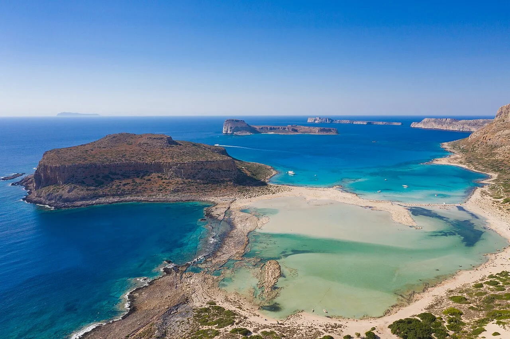

Balos
Crète, Grèce · baignade, snorkeling

À l’extrémité de la péninsule de Gramvousa, le lagon de Balos s’étend face au cap Tigani. Une destination pour découvrir le littoral crétois, en respectant les accès et les zones protégées.
- Lieu
- Crète, Grèce
- Niveau
- Variable selon les conditions
- Activités
- baignade, snorkeling
- Type d'eau
- Mer / océan
- Coordonnées
- 35.58, 23.59 (position approximative du secteur)
Ouvrir dans Ocean Buddy Télécharger sur l'App Store
Source : Visit Chania.